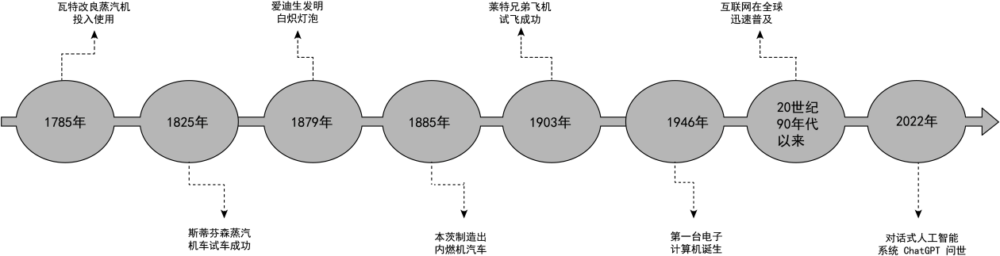
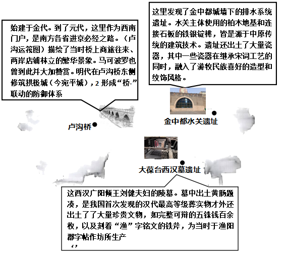

2026年北京丰台区九年级学业水平考试历史试题 原卷解析
2026年丰台区初中学业水平考试
九年级历史
注意事项：
1.本试卷共8页，共两部分，19道小题，满分60分。考试时间60分钟。
2.在试卷和答题卡上准确填写学校名称、班级、姓名和考号。
3.试题答案一律填涂或书写在答题卡上，在试卷上作答无效。
4.在答题卡上，选择题用2B铅笔作答，其他试题用黑色字迹签字笔作答。
5.考试结束，将本试卷和答题卡一并交回。
第一部分
本部分共16小题，每小题1.5分，共24分。在每小题列出的四个选项中，选出最符合题目要求的一项。
1. 田螺山遗址位于长江流域的浙江余姚一带。考古学家在这里发现了干栏式房屋建筑遗迹、约几十万颗炭化稻米、数十件骨耜、大量的动物骨骸等。据此可以推论出田螺山居民（ ）
A. 会使用天然火B. 从事原始农业生产
C. 贫富分化严重D. 进入早期国家形态
【答案】B
【解析】
【详解】A.会使用天然火是北京人的特征，且题干没有相关遗迹或信息可以支撑该结论，错误。
B.根据题干中田螺山遗址中的干栏式房屋建筑、炭化稻米、骨耜、动物骨骸以及遗址所在地等信息，结合所学知识，田螺山遗址属于河姆渡文化分布区域。田螺山遗址发现炭化稻米（农作物）、骨耜（原始农业生产工具），可以推论当时居民已经从事原始农业生产，正确。
C.题干没有出现能体现财产差距的物品或遗迹，无法推论出贫富分化严重，错误。
D.早期国家形态以阶级统治、公共权力的出现为标志，题干中没有这些相关信息，田螺山遗址属于原始农耕遗址，尚未进入早期国家阶段，错误。
2. 对下列材料理解正确的是（ ）
①青铜铭文是我国已知最早的汉字
②考古发现可以与文献史料互证
③《史记》的所有记载都真实可信
④反映出西周时期实行了分封制
A. ①②B. ①③C. ①④D. ②④
【答案】D
【解析】
【详解】①我国已知最早的汉字是甲骨文，不是青铜铭文(金文)，①错误。
②考古发现的实物资料和文献记载可以相互印证、补充，是历史研究的重要方法，②正确。
③《史记》是重要的史学著作，但受限于时代和资料，部分记载带有传说色彩或存在偏差，并非所有记载都真实可信，③错误。
④西周青铜器铭文常记载分封、赏赐等内容，能印证分封制的实行，④正确。 故本题选D。
3. 有学者认为，秦汉在制度、思想、文化、对外交流等领域不断改革，其政治制度和思想体系为后世所取法借鉴。以下措施能印证这一观点的是（ ）
①建立中央集权制度
②统一文字和货币
③确立儒家思想的正统地位
④迁都洛阳，移风易俗
A. ①②③B. ①②④C. ①③④D. ②③④
【答案】A
【解析】
【详解】①秦朝建立中央集权制度（皇帝制、郡县制），为后世历代王朝所沿用，①正确。
②秦朝统一文字（小篆）和货币（圆形方孔半两钱），促进了经济文化交流，为后世所取法，②正确。
③汉武帝“罢黜百家，尊崇儒术”，确立儒家思想的正统地位，影响了中国此后两千多年的思想文化，③正确。
④迁都洛阳、移风易俗是北魏孝文帝改革的措施，不属于秦汉时期，④错误。
故本题选A。
4. 南方地区占全国总人口的比例从西汉元始二年的27%上升到三国末年的43%，之后一路攀升至南宋绍熙四年的60%。以上材料能反映出（ ）
A. 纸币大量发行B. 海外贸易发达C. 经济重心南移D. 商帮活动频繁
【答案】C
【解析】
【详解】A.纸币大量发行（如交子）与人口比例变化无直接关系，错误。
B.海外贸易发达与人口比例变化有一定关系，但不是主要原因，错误。
C.从西汉到南宋，南方人口占比从27%上升到60%，反映了经济重心南移的趋势（经济重心南移带动人口南迁），正确。
D.商帮活动频繁是明清时期的现象（如晋商、徽商），时间偏晚，错误。
5. 示意图是学习历史的重要工具。与以下示意图中①相关的史实是（ ）

A. 赤壁之战 三国鼎立B. 修建大运河 开创科举制
C. 藩镇割据 武将专权D. 统一全国 实行行省制
【答案】B
【解析】
【详解】A.赤壁之战、三国鼎立属于三国时期，在南北朝之前，错误。
B.①位于南北朝之后、唐朝之前，对应朝代为隋朝，修建大运河、开创科举制都是隋朝的重要史实，正确。
C.藩镇割据是唐朝后期的政治特征，不符合①的时间位置，错误。
D.行省制是元朝的制度，元朝在唐朝之后，错误。
6. 下表反映出清政府（ ）
顺治、康熙 | 册封达赖和班禅 |
雍正 | 设置驻藏大臣 |
乾隆 | 颁布《钦定藏内善后章程》 |
A. 废除了丞相制度B. 实行文化专制政策
C. 稳定了东北边疆D. 加强对西藏的管辖
【答案】D
【解析】
【详解】A.废除丞相制度是明太祖朱元璋的举措，和题干内容无关，错误。
B.题干是边疆管理措施，和文化专制政策无关，错误。
C.题干措施针对的是西藏（西南边疆），稳定东北边疆和这些事件无关，错误。
D.题干表格里的册封达赖和班禅、设置驻藏大臣、颁布《钦定藏内善后章程》，都是清朝前期加强对西藏地区管辖的措施，正确。
7. 以下是一位同学在旅行时收集的“打卡纪念章”，这组纪念章反映的史事的主题是（ ）

A. 抗击外来侵略B. 推动思想解放C. 革新政治制度D. 发展民族实业
【答案】A
【解析】
【详解】A.题干中四个纪念章对应史事分别是：戚继光抗倭、郑成功收复台湾、虎门销烟、邓世昌黄海海战，这些都是中国人民反抗外来侵略的斗争，正确。
B.这些史事都是中国人民反抗外来侵略的斗争，不属于思想解放运动，错误。
C.这些史事都是中国人民反抗外来侵略的斗争，并未涉及革新政治制度，错误。
D.这些史事都是中国人民反抗外来侵略的斗争，与发展民族实业无关，错误。
8. 下表是《申报》在1872年和1912年报头的纪年方式，导致这一变化的时代背景是（ ）
1872年4月30日报头标注 | ·帝王年号“大清同治” ·农历“壬申三月二十三日” |
1912年1月2日报头标注 | ·中华民国元月二日 ·辛亥十一月十四日 ·西历千九百十二年一月二号 |
A. 戊戌变法的实行B. 中华民国的建立
C. 新文化运动兴起D. 五四运动的开展
【答案】B
【解析】
【详解】A.戊戌变法（1898年）失败，未改变纪年方式，错误。
B.1912年1月1日中华民国成立，改用公历和民国纪年，因此《申报》报头出现“中华民国元月二日”“西历千九百十二年一月二号”等纪年方式，正确。
C.新文化运动兴起于1915年，时间晚于1912年，错误。
D.五四运动爆发于1919年，时间晚于1912年，错误。
9. 一位同学在某会议纪念馆中发现下方报告，其主要内容有：“我们在这次会上纠正了第五次反围剿最后阶段与西征第一阶段中军事领导人的错误……我们推举毛泽东同志担任领导。”由此可见这次会议（ ）

A. 宣告中国共产党正式成立
B. 推动国共两党第一次合作
C. 确立了思想建党、政治建军的原则
D. 是中国共产党历史上生死攸关的转折点
【答案】D
【解析】
【详解】A.1921年中共一大宣告中国共产党正式成立，错误。
B.国民党一大推动了国共第一次合作，时间、内容均不符合，错误。
C.1929年古田会议确立了思想建党、政治建军的原则，错误。
D.遵义会议挽救了党、挽救了红军、挽救了革命，是中国共产党历史上生死攸关的转折点，正确。
10. 下表是1932年社会局统计的北平市各类车辆数量（单位：辆）。这反映出近代交通工具（ ）
类别 | 自行车 | 人力车 | 马车 | 汽车 | 摩托车 | 骡马大车 |
数量
| 64100 | 42900 | 300 | 2200 | 40 | 9400 |
A. 呈现出新旧并存的特征B. 受到新式教育发展的影响
C. 体现出自由平等的风尚D. 变化首先出现在沿海地区
【答案】A
【解析】
【详解】根据材料“1932年社会局统计的北平市各类车辆数量”结合所学可知这里有新式的交通工具如汽车、摩托车、自行车；也有人力车、马车和骡马大车等传统的交通工具，从而说明1932年的北京城的交通工具提出出新旧并存的特征，A项正确；新式交通工具的产生可以受到新式教育发展的影响，但是传统交通工具占比更大，B项说法不全面，排除；自由平等是对社会发展的评价，交通工具不能体现，排除C项；材料是北平交通工具数量，D项在材料不能体现，排除。故选A项。
11. 荷兰莱顿自然博物馆中的“欧洲1542—1544年标本集”里收录了一张原产于美洲的西红柿标本（见下图）。这源于（ ）

A. 亚历山大东征B. 租地农场出现C. 新航路开辟D. 进化论提出
【答案】C
【解析】
【详解】A.亚历山大东征发生于公元前4世纪，仅促进欧亚非的交流，未涉及美洲，不符合题意，错误。
B.租地农场是欧洲新的农业生产经营方式，和美洲物种传入欧洲无关，不符合题意，错误。
C.题干关键信息为16世纪中期、原产于美洲的西红柿出现在欧洲标本集。新航路开辟于15世纪末16世纪初，开辟后世界开始连为一个整体，促进了全球物种交流，原产美洲的西红柿因此传播到欧洲，正确。
D.进化论是19世纪达尔文提出的生物学理论，时间和内容均不符合题意，错误。
12. 下图是某同学复习时绘制的思维导图。图中①处应填写（ ）

A. 资本主义萌芽开始出现
B. 资本主义制度的确立与扩展
C. 国际共产主义运动兴起
D. 世界格局向多极化趋势发展
【答案】B
【解析】
【详解】A.资本主义萌芽出现于中世纪晚期手工工场发展阶段，和题干事件不符，错误。
B.左侧英国君主立宪制确立、美国独立、法国大革命，都属于资本主义制度的早期确立；右侧俄国改革、美国内战、日本明治维新，都推动了资本主义制度在世界范围的扩展，因此①对应“资本主义制度的确立与扩展”，正确。
C.题干事件均为资产阶级革命与改革，和国际共产主义运动兴起无关，错误。
D.世界格局多极化趋势是冷战后的发展趋势，和题干事件时代不符，错误。
13. 下表呈现了罗斯福新政时期政府推行的部分措施，能够体现出美国政府（ ）
第一阶段（1933-1934） 应急与复兴 | 《紧急银行法案》 |
《全国工业复兴法》 |
《农业调整法》 |
第二阶段（1935-1938） 改革与保障 | 《1935年银行法》 |
《全国劳工关系法》 |
《社会保障法》 |
A. 用粮食税代替余粮收集制
B. 通过立法手段干预经济
C. 奉行自由放任政策
D. 推行马歇尔计划
【答案】B
【解析】
【详解】A.用粮食税代替余粮收集制是苏俄新经济政策的内容，与罗斯福新政无关，错误。
B.表格中《紧急银行法案》《全国工业复兴法》《农业调整法》《社会保障法》等都是通过立法手段来干预经济，体现了美国政府通过立法干预经济，正确。
C.奉行自由放任政策是胡佛政府的政策，罗斯福新政实行国家干预经济，错误。
D.马歇尔计划是二战后美国对欧洲的经济援助计划（1947年），与罗斯福新政（1933—1938年）无关，错误。
14. 下侧宣传海报创作于1942年。海报顶部英文意为“联合”，底部英文意为“联合国家为自由而战”，中部展示了不同国家的旗帜、还有冒着浓烟向前行进的战舰。这张海报创作的背景是（ ）

A. 第一次世界大战的爆发B. 十月革命的胜利
C. 世界反法西斯同盟建立D. 不结盟运动兴起
【答案】C
【解析】
【详解】A.第一次世界大战爆发于1914年，时间与1942年不符，错误。
B.十月革命胜利于1917年，时间与1942年不符，错误。
C.1942年1月，26个国家签署《联合国家宣言》，标志着世界反法西斯同盟正式建立。海报中“联合”“联合国家为自由而战”正是这一背景的体现，正确。
D.不结盟运动兴起于1961年，时间与1942年不符，错误。
15. 下面这幅“四国分区占领德国示意图”反映出（ ）

A. 欧洲冷战对峙局面形成B. 社会主义阵营形成
C. 社会保障制度不断发展D. 欧洲一体化进程加快
【答案】A
【解析】
【详解】A.二战后，德国被美、苏、英、法四国分区占领，反映了美苏冷战在欧洲的对峙局面（西方占领区与苏联占领区对立），正确。
B.社会主义阵营形成是以苏联为首的东欧社会主义国家组成的，四国分区占领德国不能直接反映社会主义阵营形成，错误。
C.社会保障制度不断发展与德国分区占领无关，错误。
D.欧洲一体化进程加快是20世纪50年代以后（欧共体成立），时间晚于德国分区占领，错误。
16. 20世纪50年代以来，中国在世界上的影响越来越大。以下史事和结论表述正确的是（ ）
序号 | 史事 | 结论 |
① | 提出了和平共处五项原则 | 推动建立公正合理的国际政治经济秩序 |
② | 提出了“求同存异”方针 | 标志着非洲国家摆脱了殖民主义的枷锁 |
③ | 参加了联合国的维和行动 | 是维护世界和平与安全的坚定力量 |
④ | 倡导构建人类命运共同体 | 为全球治理贡献中国智慧与中国方案 |
A. ①②③B. ①②④C. ①③④D. ②③④
【答案】C
【解析】
【详解】①和平共处五项原则是1953年中国提出的处理国际关系的准则，现在已成为处理国与国关系的基本准则，有力推动了公正合理的国际政治经济新秩序的建立，①正确。
②“求同存异”方针是1955年中国在万隆亚非会议上提出的，促进了会议的圆满成功，推动了亚非国家的团结合作；标志着非洲国家摆脱殖民主义枷锁的是1990年纳米比亚独立，②错误。
③中国是联合国安理会常任理事国派遣维和人员最多的国家，充分说明中国是维护世界和平与安全的坚定力量，③正确。
④中国倡导构建人类命运共同体，为解决全球面临的共同问题、完善全球治理体系贡献了中国智慧与中国方案，④正确。
故选C。
第二部分
本部分共3题，共36分。
17. 科技创新·社会发展
材料一 中国古代科技成就（部分）
时期 | 概况 |
秦汉 | A总结前人经验，改进造纸术。《九章算术》总结了东汉以前的数学知识，是当时世界上先进的数学著作 |
魏晋南北朝 | 祖冲之把圆周率精确到小数点以后的第七位数字，领先世界近千年。《齐民要术》总结了农、林、牧、副、渔等方面的生产技术，是我国现存最早的一部完整的农书 |
隋唐 | 僧一行组织实测子午线长度，对天文学和数学的发展有重要意义。雕版印刷技术出现，后传入日本、波斯和欧洲等地 |
宋元 | 活字印刷术问世，指南针广泛应用于航海，火药武器进一步发展。苏颂主持创制了水运仪象台，比欧洲同类天文仪器早了数百年 |
明清 | 《本草纲目》总结了我国古代药物学成就，在世界医药史上占有重要地位。宋应星所著的B系统总结了当时农业和手工业生产技术，被誉为“中国17世纪的工艺百科全书” |
（1）依据材料一并结合所学，将以下选项填入表格中的相应位置。（填序号）概括中国古代科技发展的特点。
①蔡伦 ②张仲景 ③《农政全书》 ④《天工开物》
材料二

（2）将材料二中1785—1903年的科技成就划分为两个时期，在时间轴上用“/”标出，并说明划分依据。
（3）综合以上材料并结合所学，任选一项科技成就，谈谈该成就对人类社会发展的重要影响。
【答案】（1）A：① B：④
特点：①领域广泛，在造纸、数学、天文、农学、医学、工艺等多领域都有成就；②长期领先世界，很多成果领先国外数百年甚至上千年；③实用性强，大多服务于农业生产和社会生活；④注重经验总结，很多成果是对前人生产经验的汇总；⑤传播广泛，诸多科技成果传播到海外，影响世界。
（2）划分：在1825年和1879年之间标注“/”
依据：1785-1855年属于第一次工业革命时期，成果以蒸汽机的改进和应用为核心，人类进入蒸汽时代；1879-1903年属于第二次工业革命时期，成果以内燃机、电力的应用为核心，人类进入电气时代。
（3）示例：指南针用于航海
影响：指南针应用于航海，大大促进了世界远洋航海技术的发展，为新航路开辟提供了技术条件，推动了世界市场的形成和洲际之间的文化、物种交流，深刻改变了世界发展的面貌。（任选一项成果，表述准确即可）
【解析】
【小问1详解】
A：秦汉时期改进造纸术的是东汉的蔡伦，对应选项①；
B：明清时期宋应星所著、被誉为“中国17世纪工艺百科全书”的是《天工开物》，对应选项④。
特点：①从表格内容看，《九章算术》《齐民要术》等著作均是对生产、生活经验的总结→提炼“领域广泛，在造纸、数学、天文、农学、医学、工艺等多领域都有成就”；②“是当时世界上先进的数学著作”“比欧洲同类天文仪器早了数百年”→提炼“长期领先世界，很多成果领先国外数百年甚至上千年”；③“总结了农、林、牧、副、渔等方面的生产技术”“对天文学和数学的发展有重要意义”等→提炼“实用性强，大多服务于农业生产和社会生活”；④“总结了东汉以前的数学知识”“总结了当时农业和手工业生产技术”等→提炼“注重经验总结，很多成果是对前人生产经验的汇总”；⑤“后传入日本、波斯和欧洲等地”等→提炼“传播广泛，诸多科技成果传播到海外，影响世界”。
【小问2详解】
划分及依据：题目要求将1785—1903年的科技成就划分为两个时期。1785—1903年跨越两次工业革命。第一次工业革命（18世纪60年代—19世纪中期）以蒸汽机为核心，代表成就为瓦特改良蒸汽机、斯蒂芬森蒸汽机车；第二次工业革命（19世纪60、70年代开始）以电力和内燃机为核心，代表成就为爱迪生电灯、本茨汽车、莱特兄弟飞机。因此分界线划在1825年（斯蒂芬森蒸汽机车试车成功）与1879年（爱迪生发明白炽灯泡）之间。因此在1825年和1879年之间标注“/”。
【小问3详解】
示例：指南针用于航海
影响：结合教材，从世界远洋航海技术的发展、为新航路开辟提供了技术条件、世界市场的形成和洲际之间的文化、物种交流、改变世界发展的面貌等角度回答。
18. 运动中的时代回响。
材料一 唐代体育运动空前繁荣，包括陆上项目、水上项目、表演项目、对抗项目，涉及围棋、拔河、赛龙舟等多种运动。其中，最受欢迎的是打马球和蹴鞠运动。马球从西域等地经丝绸之路传入，在唐代曾风靡一时，上自皇帝文武百官，下至一般兵士，甚至连身体纤弱的女子都爱骑马打球。之后马球经中国传入朝鲜、日本等东亚国家。
——摘编自田卫丽《试析唐代体育运动的特征》等
（1）依据材料一，概括唐代体育发展的表现。结合所学，说明其反映的时代特征。
材料二 20世纪三十年代的运动会歌曲
创作时间 | 歌曲名称 | 歌词（节选） |
1933年 | 上海市中等学校联合运动会歌 | 全市中学生，积健可为雄……持此好身手，赴难作前锋 |
1933年 | 浙江省肖山县全县运动会歌 | 强健体魄岂为自身？恨！倭奴寇边，河山将沦……此身准备，为国牺牲 |
1937年 | 长沙市第一届小学运动会会歌 | 打倒帝国主义，打倒卖国汉奸，小朋友齐奋斗 |
1937年 | 厦门第一届运动会会歌 | 健儿身手，各显其长，大家图自强。你看那，外来敌，多么披猖……在领袖领导之下，把国事担当 |
（2）依据材料二并结合所学，说出以上歌曲产生的历史背景。分析歌曲发挥的历史作用。
材料三 中世纪，在教会学校和市政当局开办的学校里，体育没有地位，仅在骑士教育中与军事训练相结合。15世纪初，意大利学者提出发展学生道德和知识水平的同时，也要增强其身体健康，倡导利用古罗马时期的各种游戏来设计教学活动，这一观点在当时广为流传。1423年，意大利教育家创办了一所宫廷学校，主张教育目的在于培养和谐发展的人。要使儿童的精神和性格得到锻炼，就必须重视体育，为此学校开设了骑马、游泳、跑步等运动项目。
——摘编自李炆阳《欧洲近代早期体育思想研究》等
（3）依据材料三，指出15世纪前后欧洲体育教育发生的变化。结合所学，分析变化原因。
【答案】（1）表现：①体育运动类型丰富，涵盖路、水、表演、对抗等多类项目；②参与阶层广泛，从皇室到普通民众、女性都参与体育运动；③部分运动项目来自域外，且对外传播，影响周边国家。
时代特征：反映出唐代国家统一、国力强盛；开放包容，对外交流频繁；社会风气开放昂扬的时代特点。
（2）历史背景：20世纪30年代日本加紧侵华，民族危机空前严重，抗日救亡运动高涨。
历史作用：激发了民众的爱国热情，宣传了抗日救亡思想，凝聚了抗战力量，起到了动员民众投身抗日救亡运动的作用。
（3）变化：15世纪前体育不受重视，仅和军事训练结合；15世纪后体育成为学校教育的重要内容，注重通过体育培养全面发展的人，体育项目更加丰富。
变化原因：文艺复兴运动兴起，人文主义思潮传播，重视人的价值和全面发展，推动了体育教育的变革。
【解析】
【小问1详解】
表现：①“包括陆上项目、水上项目、表演项目、对抗项目，涉及围棋、拔河、赛龙舟等多种运动”→体育运动类型丰富，涵盖路、水、表演、对抗等多类项目；②“上自皇帝文武百官，下至一般兵士，甚至连身体纤弱的女子都爱骑马打球”→参与阶层广泛，从皇室到普通民众、女性都参与体育运动；③“马球从西域等地经丝绸之路传入”“马球经中国传入朝鲜、日本等东亚国家”→部分运动项目来自域外，且对外传播，影响周边国家。
时代特征：结合唐代阶段特征，唐代是中国古代封建社会的鼎盛时期，实行开放的对外政策，因此反映出唐代国家统一、国力强盛、开放包容，对外交流频繁、社会风气开放昂扬的时代特征。
【小问2详解】
历史背景：“20世纪三十年代”“倭奴寇边”“打倒帝国主义”→20世纪30年代日本加紧侵华，民族危机空前严重，抗日救亡运动高涨。
历史作用：这类歌曲将体育和救亡结合，号召民众强健体魄担当救国责任，因此能够激发民众爱国精神，推动抗日救亡运动的发展。
【小问3详解】
变化：“中世纪”“体育没有地位，仅在骑士教育中与军事训练相结合”→15世纪前体育不受重视，仅和军事训练结合；“15世纪初，意大利学者提出发展学生道德和知识水平的同时，也要增强其身体健康”→15世纪后体育成为学校教育的重要内容，“必须重视体育，为此学校开设了骑马、游泳、跑步等运动项目”→注重通过体育培养全面发展的人，体育项目更加丰富。
变化原因：从文艺复兴运动的兴起、人文主义思想的传播、对人的价值与全面发展的重视、教育变革推动的角度进行分析。
19. 某历史社团依托丰台乡土资源分小组开展主题考察活动。请你参与并完成以下任务。
【第一组】

（1）依据材料并结合所学，仿照示例，从材料中任选一处遗址，提取一条有效信息，并写出相应的推断。
示例：
遗址：卢沟桥
有效信息：明代在卢沟桥畔修建拱极城，形成联动防御体系。
推断：说明卢沟桥当时是保卫京师的一道重要屏障，在军事上占有重要地位。
【第二组】
考察地点 | 长辛店留法勤工俭学预备班旧址 | 长辛店二七纪念馆 | 中国人民抗日战争纪念馆 |
资料收集 | 1918年，在毛泽东、蔡元培等人推动下成立留法预备班，是当时国内唯一设在工厂的预备班。青年学生在这里半工半读，很多人之后走上了革命道路。他们深入到工人群体中，传播先进思想 | 1923年2月，在中国共产党领导下京汉铁路全线大罢工爆发，长辛店是北方罢工的指挥中心。工人纠察队队长葛树贵带领工人们游行示威，后遭到军阀包围，葛树贵等烈士牺牲，酿成“二七惨案” | 该纪念馆是全国唯一一座全面反映中国人民抗日战争历史的大型综合性专题纪念馆。场馆选址于卢沟桥畔，是因为1937年这里发生了②，这一事件标志着中国全民族抗战的开始 |
历史意义 | ① | 见证了中国共产党领导第一次工人运动的高潮 | 展现了14年的抗战历史进程，传递“铭记历史、珍爱和平”的理念 |
（2）依据材料并结合所学，将表中①②处信息补充完整。
【第三组】
长辛店机车车辆工厂在1953—1957年进行了大规模技术改造与扩建。1958年研制出中国第一台内燃机车，获得了“新中国火车头”的美誉。如今转型为二七厂1897科创城。
1978年以后，花乡地区的草桥、黄土岗、樊家村三个鲜花生产基地相继恢复生产。一些农民还将承包的土地由种菜改为种花，庭院养花专业户兴起。如今的花乡一带已经发展成科技和智慧主导的新兴花卉产业经济。
丰台科技园1992年启动建设，是中关村最早的“一区三园”之一。从政策驱动起步，聚集了航天军工、轨道交通等高新技术企业超2万家，成为首都科技创新高地。
（3）依据材料并结合所学，分别指出20世纪五十年代和八十年代以来丰台地区产业发展的历史背景。
【活动延伸】
（4）通过本次系列考察活动，同学们计划设计一条“一日研学路线”。请你从以上三组材料中任选两个地点，确定一个研学主题，并简述设计理由。
【答案】（1）示例一：
遗址：金中都水关遗址
有效信息：金中都水关建筑技术源于中原传统，出土瓷器融合了游牧民族风格。
推断：说明金代民族交融加强，中原文化和游牧文化互相交流影响，多民族文化共同发展。
示例二：
遗址：大葆台西汉墓遗址。
有效信息：墓中出土了渔阳郡官营冶铁作坊生产的铁斧。
推断：说明汉代官营手工业发达，冶铁业生产和管理体系成熟，盐铁官营政策得到落实。
（2）①是中国共产党早期培养革命干部的重要场所，促进了马克思主义在中国的早期传播，为中国革命培养了后备力量。
②七七事变（卢沟桥事变）
（3）20世纪五十年代背景：新中国成立后实行“一五”计划，优先发展重工业，开展工业化建设，推动了长辛店机车车辆工厂的发展。
八十年代以来背景：1978年十一届三中全会召开，实行改革开放，农村实行家庭联产承包责任制，解放了农村生产力；90年代社会主义市场经济体制逐步探索，深化改革，推动高新技术产业发展，促进了丰台花卉产业和高科技产业的兴起。
（4）示例：
地点：长辛店二七纪念馆、中国人民抗日战争纪念馆
主题：近代中国人民的抗争史
设计理由：长辛店二七纪念馆展现了中国共产党领导工人阶级反抗军阀压迫的斗争，中国人民抗日战争纪念馆展现了全民族反抗日本帝国主义侵略的历程，二者都体现了近代中国人民为争取民族独立、反抗压迫的伟大斗争精神，能够让学习者感受中国人民不屈的抗争意志，理解革命胜利的不易。
【解析】
【小问1详解】
从金中都水关、大葆台西汉墓中任选一个遗址；
示例一；遗址：金中都水关遗址 ；从材料中“水关主体使用的柏木地基和连接石板的铁银锭榫，皆是源于中原传统的建筑技术”，→提炼出建筑技术源于中原传统；材料“遗址还出土了大量瓷器，其中一些瓷器在继承宋词工艺的同时，出土瓷器融合了游牧民族风格；融入了游牧民族喜好的造型和纹饰风格”，→提炼出出土瓷器融合了游牧民族风格。推断：说明金代民族交融加强，中原文化和游牧文化互相交流影响，多民族文化共同发展。
示例二； 遗址：大葆台西汉墓遗址 ；材料“如完整可辩的五铢钱百余枚，以及刻着”渔“字铭文的铁斧，为当时于渔阳郡字帖作坊所生产”→提炼出墓中出土了渔阳郡官营冶铁作坊生产的铁斧。可以推断出西汉时期官营手工业发达，冶铁业生产和管理体系成熟，盐铁官营政策得到落实。
【小问2详解】
补①：第二组材料“青年学生在这里半工半读，很多人之后走上了革命道路”，→提炼出是中国共产党早期培养革命干部的重要场所：材料“他们深入到工人群体中，传播先进思想”，→提炼出促进了马克思主义的传播；补充为中国革命准备了人才和思想基础。
补②：材料中“卢沟桥畔，是因为1937年这里发生了②，这一事件标志着中国全民族抗战的开始”，→提炼出七七事变（卢沟桥事变）。
【小问3详解】
五十年代背景：第三组材料中“长辛店机车车辆工厂在1953—1957年进行了大规模技术改造与扩建”，→提炼出背景是1953-1957年第一个五年计划（一五计划）实施，开展工业化建设。
八十年代以来：材料中“1978年以后，花乡地区······一些农民还将承包的土地由种菜改为种花，庭院养花专业户兴起”，→提炼出1978年十一届三中全会召开，实行改革开放，农村实行家庭联产承包责任制，解放了农村生产力；材料“丰台科技园1992年启动建设，是中关村最早的“一区三园”之一”，→提炼出90年代社会主义市场经济体制逐步探索，深化改革，促进了丰台花卉产业和高科技产业的兴起。
【小问4详解】
任选两个地点，如选择长辛店二七纪念馆、中国人民抗日战争纪念馆；根据材料“见证了中国共产党领导第一次工人运动的高潮”、“展现了14年的抗战历史进程”，→提炼出主题是近代中国人民的抗争史 ；
设计理由：分别介绍两个纪念馆的历史意义，再说明考察纪念馆的教育意义：即感悟中国人民为争取民族独立、反抗压迫的伟大斗争精神，感受中国人民不屈的抗争意志，理解革命胜利的不易，培养爱国主义情怀。